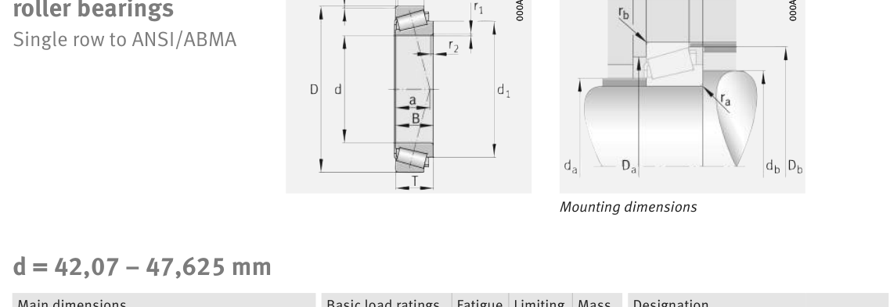

Original catalogue drawing - FAG Schaeffler HR 1, page 618

Scanned from the manufacturer catalogue page listing this part number. All part numbers printed on that table share the same drawing.
Scale cross-section
Blue = inner / outer ring, yellow = rolling element. Drawn to scale from this part's own
dimensions for selection reference only - not a manufacturing or assembly drawing.
Dimension table (mm / inch)
Symbol
Dimension
mm
inch
d
Bore diameter
44.45
1.75
D
Outside diameter
90.119
3.548
B
Inner-ring / bearing width
21.692
0.854
T
Overall assembly width
23
0.9055
C
Cup / outer-ring width
21.808
0.8586
Notes
Weights are given in kg. Load ratings are shown in both the original catalogue units and the converted value (1 N = 0.2248 lbf). Data is provided for selection reference only - confirm against the latest official catalogue before ordering.
Main dimensions
Bore d (mm)
44.45
Outside dia. D (mm)
90.119
Width B (mm)
21.692
Overall width T (mm)
23
Cup width C (mm)
21.808
Inner-ring OD d1 (mm)
63.2
Load ratings & speeds
Basic dynamic load rating Cr (lbs)
16636
Basic static load rating Cor (lbs)
19334
Basic dynamic load rating Cr (N)
74000
Basic static load rating C0r (N)
86000
Basic dynamic axial rating Ca (N)
2
Fatigue limit load Cur (N)
10200
Factor e
0.31
Factor Y
1.96
Factor Y0
1.08
Limiting speed nG (rpm)
8,800
Effective load centre a (mm)
18
Weight
Weight (kg)
0.694
Mounting dimensions (fillets / shoulders)
Chamfer r2 min (mm)
3.6
Shaft shoulder da (mm)
50
Shaft shoulder db (mm)
56
Housing shoulder Da (mm)
78
Housing shoulder Db (mm)
82
Housing fillet ra max (mm)
3.6
Fillet rb max (mm)
2.3
Bearing life (ISO 281 basic rating life)
C / P
Equivalent load P (N)
L10 (106 rev)
L10h at 2,900 rpm
4
18,500
102
584
6
12,333
392
2,256
8
9,250
1,024
5,885
10
7,400
2,154
12,382
15
4,933
8,323
47,836
Basic rating life per ISO 281: L10 = (C/P)10/3 with C = 74,000 N. Hours = L10 x 106 / (60n). Life-modification factors for lubrication, contamination and temperature (aISO) are not included.
Source & traceability
Brand
FAG
Source catalogue
FAG / Schaeffler Rolling Bearings HR 1
Catalogue page
p.618 (dimensions)
Load ratings in newtons, fatigue limit load Cur, limiting speed nG and reference speed nB.
Send us the quantity you need and we will come back with price and
lead time, normally within 24 hours. Equivalent parts from other brands can be quoted at the same time.